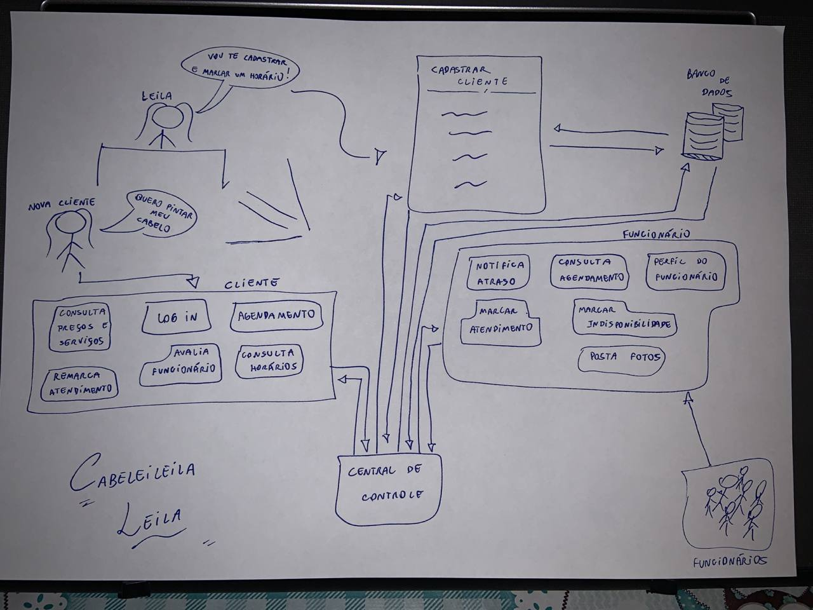
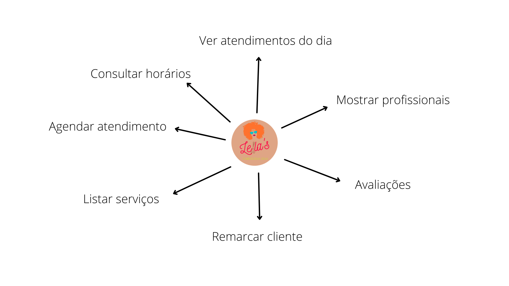
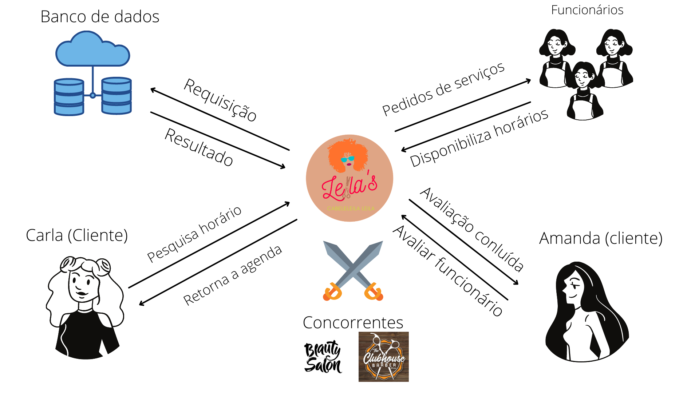

Rich Picture
Histórico de versão
| Data | Versão | Descrição | Autor(es) |
|---|---|---|---|
| 10.02.2021 | 0.1 | Criação do documento | Erick Giffoni |
| 10.02.2021 | 0.2 | Adição inicial dos Rich Pictures 1 e 2 | Erick Giffoni |
| 10.02.2021 | 1.0 | Rotaciona o Rich Picture 1 | Erick Giffoni |
| 12.02.2021 | 1.5 | Adição das descrições dos Rich Pictures 1 e 2 | Erick Giffoni |
| 12.02.2021 | 2.0 | Adiciona hyperlinks para os Rich Pictures 1 e 2 e corrige o texto em Resultados | Erick Giffoni |
| 13.02.2021 | 2.5 | Adiciona Rich Picture 3 | Erick Giffoni e Damarcones Porto |
| 13.02.2021 | 3.0 | Adiciona hyperlinks das imagens do Rich Picture 3 | Erick Giffoni |
Metodologia
Rich Pictures são artefatos que podem ser utilizados logo no começo do processo de elicitação.
Trata-se de um artefato que não precisa ter orientação metodológica específica para usá-lo.
O Rich Picture ajuda a entender melhor o contexto de uso de uma aplicação, por exemplo,
porque ele consegue ilustrar graficamente uma situação para a qual pretende-se construir um
software.
Participantes
- Erick Giffoni
- Damarcones Porto
Resultado
Do que se trata esse Rich Picture ?
A ideia é representar o contexto diário do salão da cabeleireira Leila, bem como o modus operandi
por meio do qual ela recebe clientes e fornece serviços.
Já sabemos de algumas dificuldades que a Leila tem no dia-a-dia dela no estabelecimento,
e isso pode ser visualizado no diagrama de causa e efeito.
Assim, a primeira versão do Rich Picture para o Salão da Cabeleleila Leila propõe uma
abordagem simples para resolver aqueles problemas. Vide abaixo :
Rich Picture - v1.0

Nessa primeira versão, temos ilustrada uma situação em que uma cliente pretende cortar o
cabelo no salão da Leila. Para isso, ela recorre à aplicação web do estabelecimento, a
qual tem diversas funcionalidades, como, por exemplo, agendar um atendimento.
Vale ressaltar que não só a cliente, mas também a Leila e os funcionários dela usam a
aplicação, sendo que esta troca informações constantemente com um banco de dados.
Nossa equipe, responsável por tornar a demanda de um sistema para o salão da Leila
realidade, realizou um brainstorm inicial e, a partir dele, conseguiu elicitar alguns
requisitos para o sistema em questão.
A partir disso, um novo Rich Picture foi feito, o qual trás mais algumas informações sobre
aquele universo do estabelecimento da Leila. Vide abaixo :
Rich Picture - v2.0

Essa segunda versão do Rich Picture ilustra uma nova cliente que deseja um serviço oferecido
pelo estabelecimento. Leila, então, utiliza do sistema para cadastrar a nova cliente. Esta,
assim, já pode usufruir da aplicação para conseguir o que deseja.
O Salão da Cabeleleila Leila continua comunicando-se com um banco de dados; os funcionários
permanecem utilizando esse sistema; e houve uma adição do que pode ser uma central de controle
do sistema, responsável por verificar, por exemplo, qual o tipo de requisição está sendo feita
(ex.: uma cliente tentando agendar um horário para pintar o cabelo, ou um funcionário que vai
notificar um atraso).
Uma terceira versão do Rich Picture foi feita, inspirando-se nos artefatos anteriormente mencionados,
bem como no mapa mental e na identidade visual para o Salão da Leila. Dessa vez, a ferramenta Canva foi utilizada
para trazer uma abordagem simples, limpa e visualmente agradável de situações cotidianas no estabelecimento.
Obs.: vide abaixo o Rich Picture versão 3, composto por duas imagens.
Rich Picture - v3.0
A primeira imagem representa o sistema do salão como um todo e mostra, de forma resumida,
as funcionalidades existentes. Vide abaixo :
Rich Picture - v3.0 - Imagem 1 
Já a segunda imagem representa uma situação em que duas clientes e alguns funcionários interagem
com o sistema simultaneamente, e este os atende enquanto troca informações com o banco de dados.
Vide abaixo :
Rich Picture - v3.0 - Imagem 2 
Mais ainda, essa terceira versão demonstra algumas aplicações concorrentes ao sistema do Salão da Leila.
Referências
- Livro: SOMMERVILLE, Ian. Engenharia de Software. 9a edição, São Paulo: Pearson, 2011.
- Livro: BARBOSA, S. D. J.; SILVA, B. S. Interação Humano-Computador. 1a edição, Rio de Janeiro: Elsevier, 2010.
- Videoaula - DSW - Base - RichPicture. SERRANO, Milene. Universidade de Brasília, 2021.
- Canva. Disponível em : canva.com .